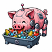

Icon Share
Public PNG icon library with descriptive bucketing, provenance metadata, a machine-readable catalog, and a lightweight static gallery.
Open the icon collection
Reusable AI-generated artifacts that are generic enough to share, cheap enough to copy, and useful enough to keep.
The repo currently exposes one local asset collection and one curated
external index. Both live under share/.
Public PNG icon library with descriptive bucketing, provenance metadata, a machine-readable catalog, and a lightweight static gallery.
Open the icon collectionCurated external links for icon packs and generation tools, kept separate from the locally hosted asset collection.
Open the links index
Future public artifacts should be added under share/<collection>/,
not as new root-level asset dumps.